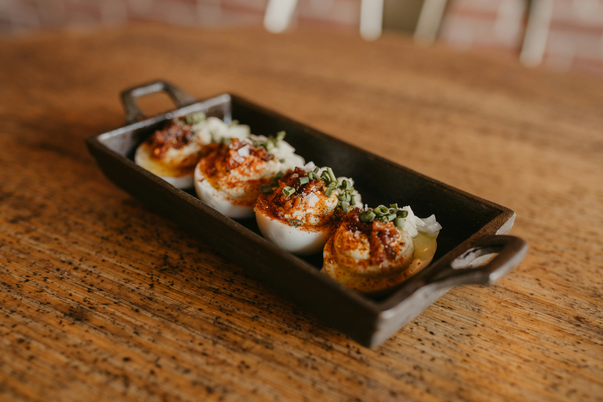
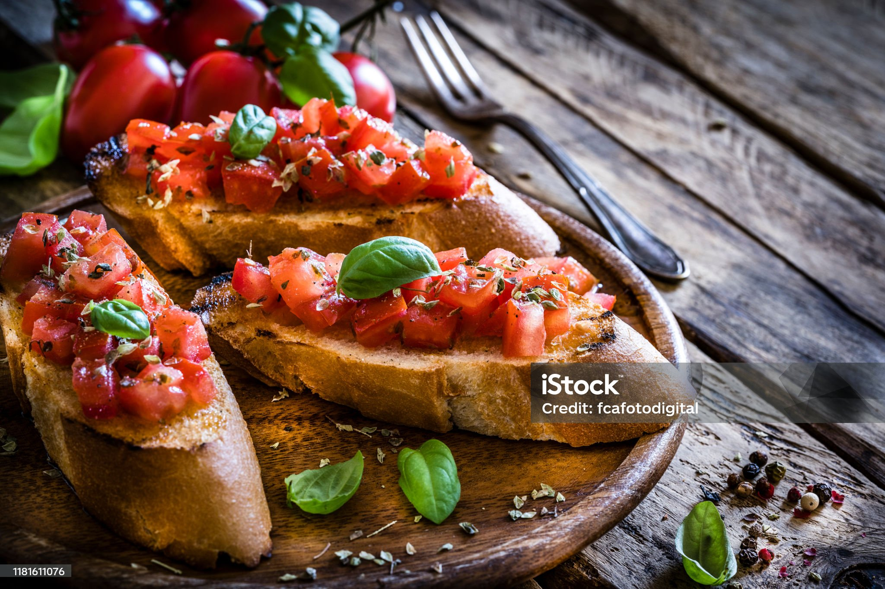

Deviled eggs are a classic appetizer that’s both easy to make and always a crowd-pleaser. With a creamy, flavorful filling inside a perfectly cooked egg, these bite-sized treats are perfect for parties, picnics, or family gatherings.
Prep: 10 min | Cook: 10 min 
Place the eggs in a saucepan and cover them with cold water. Bring to a boil over medium-high heat. Once boiling, reduce heat to low and let simmer for 9-10 minutes. Remove and transfer eggs to an ice bath to cool for 5-10 minutes.
Once cool, gently crack the shells and peel the eggs. Slice in half lengthwise and remove the yolks.
Mash the yolks in a bowl until smooth. Add mayonnaise, Dijon mustard, white vinegar, salt, and pepper. Mix until creamy and well combined. Adjust seasoning to taste.
Spoon or pipe the yolk mixture back into the egg whites, filling each half generously.
Sprinkle with paprika for a pop of color and flavor. Optionally, garnish with fresh parsley. Serve chilled.
A classic Italian appetizer featuring crispy toasted bread topped with a fresh tomato, basil, and garlic mixture. Drizzle with olive oil and balsamic glaze for extra flavor. Perfect for any gathering!
For a delicious twist, top your bruschetta with fresh mozzarella slices and a drizzle of balsamic glaze. This Caprese-style version adds a creamy, tangy balance to the traditional flavors, making it even more irresistible!
